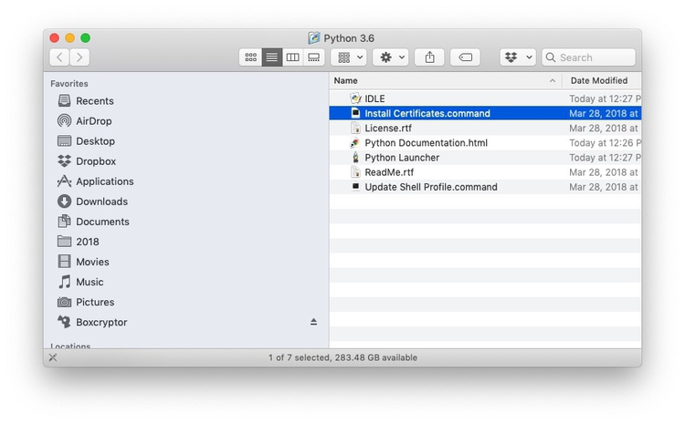

When you try to install some of the software below, you will be warned that it comes from an unknown developer. To override this warning and install the software, right-click and select Open.
Our spreadsheet application for these classes will be Google Sheets. Use from your Google Drive account.
Some of the tools we will use are Chrome add-ons. Ensure that you have the latest version of this popular web browser.
For some exercises, you will need a text editor optimized for authoring web pages. These are both good options.
Your go-to resource for color schemes to encode data. Web app: no installation required.
Allows you to simulate the effects of three forms of colorblindness on your screen, to check that your charts and maps do not exclude the color-impaired. Download and move to your Applications folder. When launched, program icon will appear to the right of your menu bar. You can set to start at login under Preferences.
Visualization software designed for exploratory graphic analysis, which also allows you to create interactive online graphics without JavaScript coding. You will also need to sign up for a free Tableau Public account.
Point-and-click GUI for version control of your projects, and synching with remote hosting at GitHub. Download from here. You will also need to sign up here for a free GitHub account.
Markdown editor, which will make authoring webpages much easier. Download from here. (If you are already using Markdown, feel free to keep using the editor of your choice.)
A powerful tool for data cleaning. Download the version 3.2 from here. When launched, Open Refine will work in your default web browser; note that your data remains on your computer, and is not uploaded to the web.
A tool for extracting tables of data from digital PDFs. Downlaod from here. When launched, Tabula will work in your default web browser; again, your data remains on your computer, and is not uploaded to the web.
Allows you to convert tabular (spreadsheet/CSV) data to web-friendly formats including JSON. Web app: no installation required.
R is a software environment and programming language for statistical computing and graphics. Download the version for OSX from here. R Studio provides a user interface that makes it much easier to use. Download the latest free version of RStudio Desktop from here.
Allows you to convert addresses to latitude and longitude coordinates. Web app: no installation required; however, you will need to sign up for API keys for the geocoding services it uses.
The leading open source Geographic Information System. Download the long-term release from here, and download Python 3.6 from this link.
First install Python 3.6. When the installation package has finished running, this window should open:

Double-click on each of Install Certificates.command and Udpate Shell Profile.command to complete the installation. Doing so will open a Terminal window and run a script. You can close each window after the script has run.
Now install QGIS.
Web-based map design studio. Sign up here for a free Mapbox account.
While we won’t use these two web apps in class, they can be useful for making online visualizations. They lack the data analysis capabilities of Tableau and R. But if one of their templates are useful for your project, you may want to try them out.
Web app developed by German journalism organizations that has been used to make simple online charts and maps by several leading news outlets. No installation required, but you will need to sign up for a free Datawrapper account using the Login/Sign Up link at top right of the home page.
Templates for more sophisticated online visualizations including network graphs, animated bar charts, treemaps, and more, from the UK digital design studio Kiln. Sign up for a free account on the home page.